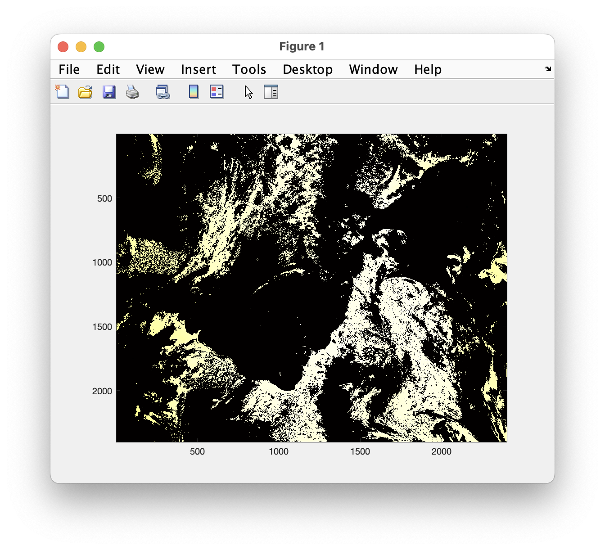
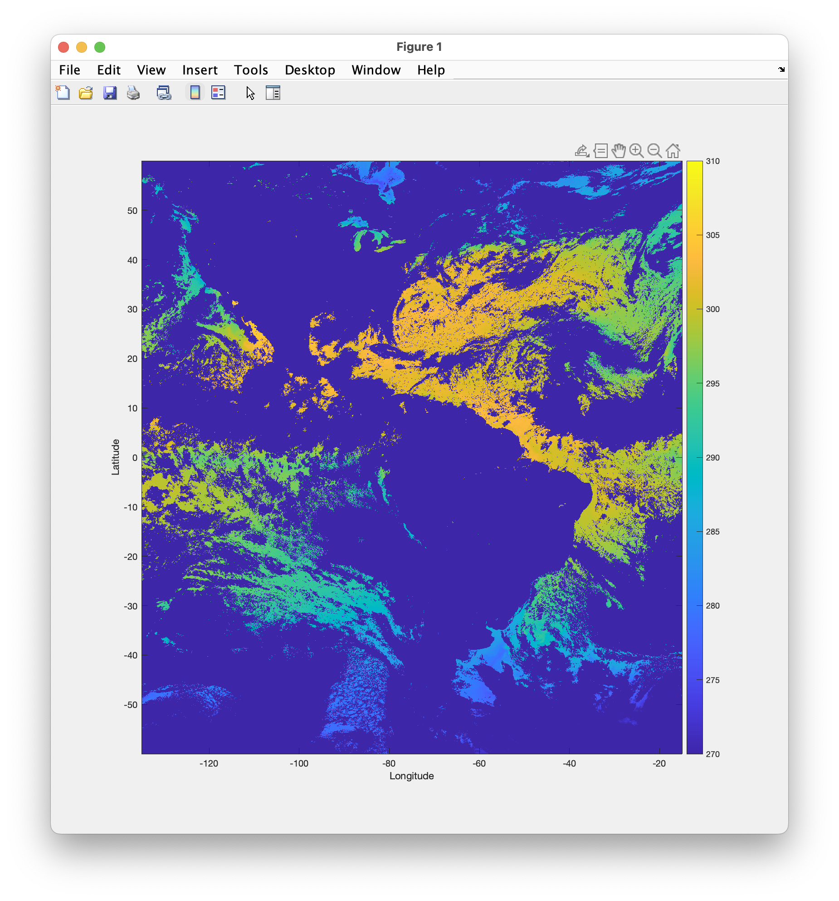

<!DOCTYPE html>
<html lang="en">
<head>
<meta charset="UTF-8">
<meta http-equiv="X-UA-Compatible" content="IE=edge">
<meta name="viewport" content="width=device-width, initial-scale=1.0">
<meta name="generator" content="Asciidoctor 2.0.23">
<meta name="author" content="2025-04-19">
<title>Using Matlab with OPeNDAP</title>
<link rel="stylesheet" href="https://fonts.googleapis.com/css?family=Open+Sans:300,300italic,400,400italic,600,600italic%7CNoto+Serif:400,400italic,700,700italic%7CDroid+Sans+Mono:400,700">
<style>
/*! Asciidoctor default stylesheet | MIT License | https://asciidoctor.org */
/* Uncomment the following line when using as a custom stylesheet */
/* @import "https://fonts.googleapis.com/css?family=Open+Sans:300,300italic,400,400italic,600,600italic%7CNoto+Serif:400,400italic,700,700italic%7CDroid+Sans+Mono:400,700"; */
html{font-family:sans-serif;-webkit-text-size-adjust:100%}
a{background:none}
a:focus{outline:thin dotted}
a:active,a:hover{outline:0}
h1{font-size:2em;margin:.67em 0}
b,strong{font-weight:bold}
abbr{font-size:.9em}
abbr[title]{cursor:help;border-bottom:1px dotted #dddddf;text-decoration:none}
dfn{font-style:italic}
hr{height:0}
mark{background:#ff0;color:#000}
code,kbd,pre,samp{font-family:monospace;font-size:1em}
pre{white-space:pre-wrap}
q{quotes:"\201C" "\201D" "\2018" "\2019"}
small{font-size:80%}
sub,sup{font-size:75%;line-height:0;position:relative;vertical-align:baseline}
sup{top:-.5em}
sub{bottom:-.25em}
img{border:0}
svg:not(:root){overflow:hidden}
figure{margin:0}
audio,video{display:inline-block}
audio:not([controls]){display:none;height:0}
fieldset{border:1px solid silver;margin:0 2px;padding:.35em .625em .75em}
legend{border:0;padding:0}
button,input,select,textarea{font-family:inherit;font-size:100%;margin:0}
button,input{line-height:normal}
button,select{text-transform:none}
button,html input[type=button],input[type=reset],input[type=submit]{-webkit-appearance:button;cursor:pointer}
button[disabled],html input[disabled]{cursor:default}
input[type=checkbox],input[type=radio]{padding:0}
button::-moz-focus-inner,input::-moz-focus-inner{border:0;padding:0}
textarea{overflow:auto;vertical-align:top}
table{border-collapse:collapse;border-spacing:0}
*,::before,::after{box-sizing:border-box}
html,body{font-size:100%}
body{background:#fff;color:rgba(0,0,0,.8);padding:0;margin:0;font-family:"Noto Serif","DejaVu Serif",serif;line-height:1;position:relative;cursor:auto;-moz-tab-size:4;-o-tab-size:4;tab-size:4;word-wrap:anywhere;-moz-osx-font-smoothing:grayscale;-webkit-font-smoothing:antialiased}
a:hover{cursor:pointer}
img,object,embed{max-width:100%;height:auto}
object,embed{height:100%}
img{-ms-interpolation-mode:bicubic}
.left{float:left!important}
.right{float:right!important}
.text-left{text-align:left!important}
.text-right{text-align:right!important}
.text-center{text-align:center!important}
.text-justify{text-align:justify!important}
.hide{display:none}
img,object,svg{display:inline-block;vertical-align:middle}
textarea{height:auto;min-height:50px}
select{width:100%}
.subheader,.admonitionblock td.content>.title,.audioblock>.title,.exampleblock>.title,.imageblock>.title,.listingblock>.title,.literalblock>.title,.stemblock>.title,.openblock>.title,.paragraph>.title,.quoteblock>.title,table.tableblock>.title,.verseblock>.title,.videoblock>.title,.dlist>.title,.olist>.title,.ulist>.title,.qlist>.title,.hdlist>.title{line-height:1.45;color:#7a2518;font-weight:400;margin-top:0;margin-bottom:.25em}
div,dl,dt,dd,ul,ol,li,h1,h2,h3,#toctitle,.sidebarblock>.content>.title,h4,h5,h6,pre,form,p,blockquote,th,td{margin:0;padding:0}
a{color:#2156a5;text-decoration:underline;line-height:inherit}
a:hover,a:focus{color:#1d4b8f}
a img{border:0}
p{line-height:1.6;margin-bottom:1.25em;text-rendering:optimizeLegibility}
p aside{font-size:.875em;line-height:1.35;font-style:italic}
h1,h2,h3,#toctitle,.sidebarblock>.content>.title,h4,h5,h6{font-family:"Open Sans","DejaVu Sans",sans-serif;font-weight:300;font-style:normal;color:#ba3925;text-rendering:optimizeLegibility;margin-top:1em;margin-bottom:.5em;line-height:1.0125em}
h1 small,h2 small,h3 small,#toctitle small,.sidebarblock>.content>.title small,h4 small,h5 small,h6 small{font-size:60%;color:#e99b8f;line-height:0}
h1{font-size:2.125em}
h2{font-size:1.6875em}
h3,#toctitle,.sidebarblock>.content>.title{font-size:1.375em}
h4,h5{font-size:1.125em}
h6{font-size:1em}
hr{border:solid #dddddf;border-width:1px 0 0;clear:both;margin:1.25em 0 1.1875em}
em,i{font-style:italic;line-height:inherit}
strong,b{font-weight:bold;line-height:inherit}
small{font-size:60%;line-height:inherit}
code{font-family:"Droid Sans Mono","DejaVu Sans Mono",monospace;font-weight:400;color:rgba(0,0,0,.9)}
ul,ol,dl{line-height:1.6;margin-bottom:1.25em;list-style-position:outside;font-family:inherit}
ul,ol{margin-left:1.5em}
ul li ul,ul li ol{margin-left:1.25em;margin-bottom:0}
ul.circle{list-style-type:circle}
ul.disc{list-style-type:disc}
ul.square{list-style-type:square}
ul.circle ul:not([class]),ul.disc ul:not([class]),ul.square ul:not([class]){list-style:inherit}
ol li ul,ol li ol{margin-left:1.25em;margin-bottom:0}
dl dt{margin-bottom:.3125em;font-weight:bold}
dl dd{margin-bottom:1.25em}
blockquote{margin:0 0 1.25em;padding:.5625em 1.25em 0 1.1875em;border-left:1px solid #ddd}
blockquote,blockquote p{line-height:1.6;color:rgba(0,0,0,.85)}
@media screen and (min-width:768px){h1,h2,h3,#toctitle,.sidebarblock>.content>.title,h4,h5,h6{line-height:1.2}
h1{font-size:2.75em}
h2{font-size:2.3125em}
h3,#toctitle,.sidebarblock>.content>.title{font-size:1.6875em}
h4{font-size:1.4375em}}
table{background:#fff;margin-bottom:1.25em;border:1px solid #dedede;word-wrap:normal}
table thead,table tfoot{background:#f7f8f7}
table thead tr th,table thead tr td,table tfoot tr th,table tfoot tr td{padding:.5em .625em .625em;font-size:inherit;color:rgba(0,0,0,.8);text-align:left}
table tr th,table tr td{padding:.5625em .625em;font-size:inherit;color:rgba(0,0,0,.8)}
table tr.even,table tr.alt{background:#f8f8f7}
table thead tr th,table tfoot tr th,table tbody tr td,table tr td,table tfoot tr td{line-height:1.6}
h1,h2,h3,#toctitle,.sidebarblock>.content>.title,h4,h5,h6{line-height:1.2;word-spacing:-.05em}
h1 strong,h2 strong,h3 strong,#toctitle strong,.sidebarblock>.content>.title strong,h4 strong,h5 strong,h6 strong{font-weight:400}
.center{margin-left:auto;margin-right:auto}
.stretch{width:100%}
.clearfix::before,.clearfix::after,.float-group::before,.float-group::after{content:" ";display:table}
.clearfix::after,.float-group::after{clear:both}
:not(pre).nobreak{word-wrap:normal}
:not(pre).nowrap{white-space:nowrap}
:not(pre).pre-wrap{white-space:pre-wrap}
:not(pre):not([class^=L])>code{font-size:.9375em;font-style:normal!important;letter-spacing:0;padding:.1em .5ex;word-spacing:-.15em;background:#f7f7f8;border-radius:4px;line-height:1.45;text-rendering:optimizeSpeed}
pre{color:rgba(0,0,0,.9);font-family:"Droid Sans Mono","DejaVu Sans Mono",monospace;line-height:1.45;text-rendering:optimizeSpeed}
pre code,pre pre{color:inherit;font-size:inherit;line-height:inherit}
pre>code{display:block}
pre.nowrap,pre.nowrap pre{white-space:pre;word-wrap:normal}
em em{font-style:normal}
strong strong{font-weight:400}
.keyseq{color:rgba(51,51,51,.8)}
kbd{font-family:"Droid Sans Mono","DejaVu Sans Mono",monospace;display:inline-block;color:rgba(0,0,0,.8);font-size:.65em;line-height:1.45;background:#f7f7f7;border:1px solid #ccc;border-radius:3px;box-shadow:0 1px 0 rgba(0,0,0,.2),inset 0 0 0 .1em #fff;margin:0 .15em;padding:.2em .5em;vertical-align:middle;position:relative;top:-.1em;white-space:nowrap}
.keyseq kbd:first-child{margin-left:0}
.keyseq kbd:last-child{margin-right:0}
.menuseq,.menuref{color:#000}
.menuseq b:not(.caret),.menuref{font-weight:inherit}
.menuseq{word-spacing:-.02em}
.menuseq b.caret{font-size:1.25em;line-height:.8}
.menuseq i.caret{font-weight:bold;text-align:center;width:.45em}
b.button::before,b.button::after{position:relative;top:-1px;font-weight:400}
b.button::before{content:"[";padding:0 3px 0 2px}
b.button::after{content:"]";padding:0 2px 0 3px}
p a>code:hover{color:rgba(0,0,0,.9)}
#header,#content,#footnotes,#footer{width:100%;margin:0 auto;max-width:62.5em;*zoom:1;position:relative;padding-left:.9375em;padding-right:.9375em}
#header::before,#header::after,#content::before,#content::after,#footnotes::before,#footnotes::after,#footer::before,#footer::after{content:" ";display:table}
#header::after,#content::after,#footnotes::after,#footer::after{clear:both}
#content{margin-top:1.25em}
#content::before{content:none}
#header>h1:first-child{color:rgba(0,0,0,.85);margin-top:2.25rem;margin-bottom:0}
#header>h1:first-child+#toc{margin-top:8px;border-top:1px solid #dddddf}
#header>h1:only-child{border-bottom:1px solid #dddddf;padding-bottom:8px}
#header .details{border-bottom:1px solid #dddddf;line-height:1.45;padding-top:.25em;padding-bottom:.25em;padding-left:.25em;color:rgba(0,0,0,.6);display:flex;flex-flow:row wrap}
#header .details span:first-child{margin-left:-.125em}
#header .details span.email a{color:rgba(0,0,0,.85)}
#header .details br{display:none}
#header .details br+span::before{content:"\00a0\2013\00a0"}
#header .details br+span.author::before{content:"\00a0\22c5\00a0";color:rgba(0,0,0,.85)}
#header .details br+span#revremark::before{content:"\00a0|\00a0"}
#header #revnumber{text-transform:capitalize}
#header #revnumber::after{content:"\00a0"}
#content>h1:first-child:not([class]){color:rgba(0,0,0,.85);border-bottom:1px solid #dddddf;padding-bottom:8px;margin-top:0;padding-top:1rem;margin-bottom:1.25rem}
#toc{border-bottom:1px solid #e7e7e9;padding-bottom:.5em}
#toc>ul{margin-left:.125em}
#toc ul.sectlevel0>li>a{font-style:italic}
#toc ul.sectlevel0 ul.sectlevel1{margin:.5em 0}
#toc ul{font-family:"Open Sans","DejaVu Sans",sans-serif;list-style-type:none}
#toc li{line-height:1.3334;margin-top:.3334em}
#toc a{text-decoration:none}
#toc a:active{text-decoration:underline}
#toctitle{color:#7a2518;font-size:1.2em}
@media screen and (min-width:768px){#toctitle{font-size:1.375em}
body.toc2{padding-left:15em;padding-right:0}
body.toc2 #header>h1:nth-last-child(2){border-bottom:1px solid #dddddf;padding-bottom:8px}
#toc.toc2{margin-top:0!important;background:#f8f8f7;position:fixed;width:15em;left:0;top:0;border-right:1px solid #e7e7e9;border-top-width:0!important;border-bottom-width:0!important;z-index:1000;padding:1.25em 1em;height:100%;overflow:auto}
#toc.toc2 #toctitle{margin-top:0;margin-bottom:.8rem;font-size:1.2em}
#toc.toc2>ul{font-size:.9em;margin-bottom:0}
#toc.toc2 ul ul{margin-left:0;padding-left:1em}
#toc.toc2 ul.sectlevel0 ul.sectlevel1{padding-left:0;margin-top:.5em;margin-bottom:.5em}
body.toc2.toc-right{padding-left:0;padding-right:15em}
body.toc2.toc-right #toc.toc2{border-right-width:0;border-left:1px solid #e7e7e9;left:auto;right:0}}
@media screen and (min-width:1280px){body.toc2{padding-left:20em;padding-right:0}
#toc.toc2{width:20em}
#toc.toc2 #toctitle{font-size:1.375em}
#toc.toc2>ul{font-size:.95em}
#toc.toc2 ul ul{padding-left:1.25em}
body.toc2.toc-right{padding-left:0;padding-right:20em}}
#content #toc{border:1px solid #e0e0dc;margin-bottom:1.25em;padding:1.25em;background:#f8f8f7;border-radius:4px}
#content #toc>:first-child{margin-top:0}
#content #toc>:last-child{margin-bottom:0}
#footer{max-width:none;background:rgba(0,0,0,.8);padding:1.25em}
#footer-text{color:hsla(0,0%,100%,.8);line-height:1.44}
#content{margin-bottom:.625em}
.sect1{padding-bottom:.625em}
@media screen and (min-width:768px){#content{margin-bottom:1.25em}
.sect1{padding-bottom:1.25em}}
.sect1:last-child{padding-bottom:0}
.sect1+.sect1{border-top:1px solid #e7e7e9}
#content h1>a.anchor,h2>a.anchor,h3>a.anchor,#toctitle>a.anchor,.sidebarblock>.content>.title>a.anchor,h4>a.anchor,h5>a.anchor,h6>a.anchor{position:absolute;z-index:1001;width:1.5ex;margin-left:-1.5ex;display:block;text-decoration:none!important;visibility:hidden;text-align:center;font-weight:400}
#content h1>a.anchor::before,h2>a.anchor::before,h3>a.anchor::before,#toctitle>a.anchor::before,.sidebarblock>.content>.title>a.anchor::before,h4>a.anchor::before,h5>a.anchor::before,h6>a.anchor::before{content:"\00A7";font-size:.85em;display:block;padding-top:.1em}
#content h1:hover>a.anchor,#content h1>a.anchor:hover,h2:hover>a.anchor,h2>a.anchor:hover,h3:hover>a.anchor,#toctitle:hover>a.anchor,.sidebarblock>.content>.title:hover>a.anchor,h3>a.anchor:hover,#toctitle>a.anchor:hover,.sidebarblock>.content>.title>a.anchor:hover,h4:hover>a.anchor,h4>a.anchor:hover,h5:hover>a.anchor,h5>a.anchor:hover,h6:hover>a.anchor,h6>a.anchor:hover{visibility:visible}
#content h1>a.link,h2>a.link,h3>a.link,#toctitle>a.link,.sidebarblock>.content>.title>a.link,h4>a.link,h5>a.link,h6>a.link{color:#ba3925;text-decoration:none}
#content h1>a.link:hover,h2>a.link:hover,h3>a.link:hover,#toctitle>a.link:hover,.sidebarblock>.content>.title>a.link:hover,h4>a.link:hover,h5>a.link:hover,h6>a.link:hover{color:#a53221}
details,.audioblock,.imageblock,.literalblock,.listingblock,.stemblock,.videoblock{margin-bottom:1.25em}
details{margin-left:1.25rem}
details>summary{cursor:pointer;display:block;position:relative;line-height:1.6;margin-bottom:.625rem;outline:none;-webkit-tap-highlight-color:transparent}
details>summary::-webkit-details-marker{display:none}
details>summary::before{content:"";border:solid transparent;border-left:solid;border-width:.3em 0 .3em .5em;position:absolute;top:.5em;left:-1.25rem;transform:translateX(15%)}
details[open]>summary::before{border:solid transparent;border-top:solid;border-width:.5em .3em 0;transform:translateY(15%)}
details>summary::after{content:"";width:1.25rem;height:1em;position:absolute;top:.3em;left:-1.25rem}
.admonitionblock td.content>.title,.audioblock>.title,.exampleblock>.title,.imageblock>.title,.listingblock>.title,.literalblock>.title,.stemblock>.title,.openblock>.title,.paragraph>.title,.quoteblock>.title,table.tableblock>.title,.verseblock>.title,.videoblock>.title,.dlist>.title,.olist>.title,.ulist>.title,.qlist>.title,.hdlist>.title{text-rendering:optimizeLegibility;text-align:left;font-family:"Noto Serif","DejaVu Serif",serif;font-size:1rem;font-style:italic}
table.tableblock.fit-content>caption.title{white-space:nowrap;width:0}
.paragraph.lead>p,#preamble>.sectionbody>[class=paragraph]:first-of-type p{font-size:1.21875em;line-height:1.6;color:rgba(0,0,0,.85)}
.admonitionblock>table{border-collapse:separate;border:0;background:none;width:100%}
.admonitionblock>table td.icon{text-align:center;width:80px}
.admonitionblock>table td.icon img{max-width:none}
.admonitionblock>table td.icon .title{font-weight:bold;font-family:"Open Sans","DejaVu Sans",sans-serif;text-transform:uppercase}
.admonitionblock>table td.content{padding-left:1.125em;padding-right:1.25em;border-left:1px solid #dddddf;color:rgba(0,0,0,.6);word-wrap:anywhere}
.admonitionblock>table td.content>:last-child>:last-child{margin-bottom:0}
.exampleblock>.content{border:1px solid #e6e6e6;margin-bottom:1.25em;padding:1.25em;background:#fff;border-radius:4px}
.sidebarblock{border:1px solid #dbdbd6;margin-bottom:1.25em;padding:1.25em;background:#f3f3f2;border-radius:4px}
.sidebarblock>.content>.title{color:#7a2518;margin-top:0;text-align:center}
.exampleblock>.content>:first-child,.sidebarblock>.content>:first-child{margin-top:0}
.exampleblock>.content>:last-child,.exampleblock>.content>:last-child>:last-child,.exampleblock>.content .olist>ol>li:last-child>:last-child,.exampleblock>.content .ulist>ul>li:last-child>:last-child,.exampleblock>.content .qlist>ol>li:last-child>:last-child,.sidebarblock>.content>:last-child,.sidebarblock>.content>:last-child>:last-child,.sidebarblock>.content .olist>ol>li:last-child>:last-child,.sidebarblock>.content .ulist>ul>li:last-child>:last-child,.sidebarblock>.content .qlist>ol>li:last-child>:last-child{margin-bottom:0}
.literalblock pre,.listingblock>.content>pre{border-radius:4px;overflow-x:auto;padding:1em;font-size:.8125em}
@media screen and (min-width:768px){.literalblock pre,.listingblock>.content>pre{font-size:.90625em}}
@media screen and (min-width:1280px){.literalblock pre,.listingblock>.content>pre{font-size:1em}}
.literalblock pre,.listingblock>.content>pre:not(.highlight),.listingblock>.content>pre[class=highlight],.listingblock>.content>pre[class^="highlight "]{background:#f7f7f8}
.literalblock.output pre{color:#f7f7f8;background:rgba(0,0,0,.9)}
.listingblock>.content{position:relative}
.listingblock code[data-lang]::before{display:none;content:attr(data-lang);position:absolute;font-size:.75em;top:.425rem;right:.5rem;line-height:1;text-transform:uppercase;color:inherit;opacity:.5}
.listingblock:hover code[data-lang]::before{display:block}
.listingblock.terminal pre .command::before{content:attr(data-prompt);padding-right:.5em;color:inherit;opacity:.5}
.listingblock.terminal pre .command:not([data-prompt])::before{content:"$"}
.listingblock pre.highlightjs{padding:0}
.listingblock pre.highlightjs>code{padding:1em;border-radius:4px}
.listingblock pre.prettyprint{border-width:0}
.prettyprint{background:#f7f7f8}
pre.prettyprint .linenums{line-height:1.45;margin-left:2em}
pre.prettyprint li{background:none;list-style-type:inherit;padding-left:0}
pre.prettyprint li code[data-lang]::before{opacity:1}
pre.prettyprint li:not(:first-child) code[data-lang]::before{display:none}
table.linenotable{border-collapse:separate;border:0;margin-bottom:0;background:none}
table.linenotable td[class]{color:inherit;vertical-align:top;padding:0;line-height:inherit;white-space:normal}
table.linenotable td.code{padding-left:.75em}
table.linenotable td.linenos,pre.pygments .linenos{border-right:1px solid;opacity:.35;padding-right:.5em;-webkit-user-select:none;-moz-user-select:none;-ms-user-select:none;user-select:none}
pre.pygments span.linenos{display:inline-block;margin-right:.75em}
.quoteblock{margin:0 1em 1.25em 1.5em;display:table}
.quoteblock:not(.excerpt)>.title{margin-left:-1.5em;margin-bottom:.75em}
.quoteblock blockquote,.quoteblock p{color:rgba(0,0,0,.85);font-size:1.15rem;line-height:1.75;word-spacing:.1em;letter-spacing:0;font-style:italic;text-align:justify}
.quoteblock blockquote{margin:0;padding:0;border:0}
.quoteblock blockquote::before{content:"\201c";float:left;font-size:2.75em;font-weight:bold;line-height:.6em;margin-left:-.6em;color:#7a2518;text-shadow:0 1px 2px rgba(0,0,0,.1)}
.quoteblock blockquote>.paragraph:last-child p{margin-bottom:0}
.quoteblock .attribution{margin-top:.75em;margin-right:.5ex;text-align:right}
.verseblock{margin:0 1em 1.25em}
.verseblock pre{font-family:"Open Sans","DejaVu Sans",sans-serif;font-size:1.15rem;color:rgba(0,0,0,.85);font-weight:300;text-rendering:optimizeLegibility}
.verseblock pre strong{font-weight:400}
.verseblock .attribution{margin-top:1.25rem;margin-left:.5ex}
.quoteblock .attribution,.verseblock .attribution{font-size:.9375em;line-height:1.45;font-style:italic}
.quoteblock .attribution br,.verseblock .attribution br{display:none}
.quoteblock .attribution cite,.verseblock .attribution cite{display:block;letter-spacing:-.025em;color:rgba(0,0,0,.6)}
.quoteblock.abstract blockquote::before,.quoteblock.excerpt blockquote::before,.quoteblock .quoteblock blockquote::before{display:none}
.quoteblock.abstract blockquote,.quoteblock.abstract p,.quoteblock.excerpt blockquote,.quoteblock.excerpt p,.quoteblock .quoteblock blockquote,.quoteblock .quoteblock p{line-height:1.6;word-spacing:0}
.quoteblock.abstract{margin:0 1em 1.25em;display:block}
.quoteblock.abstract>.title{margin:0 0 .375em;font-size:1.15em;text-align:center}
.quoteblock.excerpt>blockquote,.quoteblock .quoteblock{padding:0 0 .25em 1em;border-left:.25em solid #dddddf}
.quoteblock.excerpt,.quoteblock .quoteblock{margin-left:0}
.quoteblock.excerpt blockquote,.quoteblock.excerpt p,.quoteblock .quoteblock blockquote,.quoteblock .quoteblock p{color:inherit;font-size:1.0625rem}
.quoteblock.excerpt .attribution,.quoteblock .quoteblock .attribution{color:inherit;font-size:.85rem;text-align:left;margin-right:0}
p.tableblock:last-child{margin-bottom:0}
td.tableblock>.content{margin-bottom:1.25em;word-wrap:anywhere}
td.tableblock>.content>:last-child{margin-bottom:-1.25em}
table.tableblock,th.tableblock,td.tableblock{border:0 solid #dedede}
table.grid-all>*>tr>*{border-width:1px}
table.grid-cols>*>tr>*{border-width:0 1px}
table.grid-rows>*>tr>*{border-width:1px 0}
table.frame-all{border-width:1px}
table.frame-ends{border-width:1px 0}
table.frame-sides{border-width:0 1px}
table.frame-none>colgroup+*>:first-child>*,table.frame-sides>colgroup+*>:first-child>*{border-top-width:0}
table.frame-none>:last-child>:last-child>*,table.frame-sides>:last-child>:last-child>*{border-bottom-width:0}
table.frame-none>*>tr>:first-child,table.frame-ends>*>tr>:first-child{border-left-width:0}
table.frame-none>*>tr>:last-child,table.frame-ends>*>tr>:last-child{border-right-width:0}
table.stripes-all>*>tr,table.stripes-odd>*>tr:nth-of-type(odd),table.stripes-even>*>tr:nth-of-type(even),table.stripes-hover>*>tr:hover{background:#f8f8f7}
th.halign-left,td.halign-left{text-align:left}
th.halign-right,td.halign-right{text-align:right}
th.halign-center,td.halign-center{text-align:center}
th.valign-top,td.valign-top{vertical-align:top}
th.valign-bottom,td.valign-bottom{vertical-align:bottom}
th.valign-middle,td.valign-middle{vertical-align:middle}
table thead th,table tfoot th{font-weight:bold}
tbody tr th{background:#f7f8f7}
tbody tr th,tbody tr th p,tfoot tr th,tfoot tr th p{color:rgba(0,0,0,.8);font-weight:bold}
p.tableblock>code:only-child{background:none;padding:0}
p.tableblock{font-size:1em}
ol{margin-left:1.75em}
ul li ol{margin-left:1.5em}
dl dd{margin-left:1.125em}
dl dd:last-child,dl dd:last-child>:last-child{margin-bottom:0}
li p,ul dd,ol dd,.olist .olist,.ulist .ulist,.ulist .olist,.olist .ulist{margin-bottom:.625em}
ul.checklist,ul.none,ol.none,ul.no-bullet,ol.no-bullet,ol.unnumbered,ul.unstyled,ol.unstyled{list-style-type:none}
ul.no-bullet,ol.no-bullet,ol.unnumbered{margin-left:.625em}
ul.unstyled,ol.unstyled{margin-left:0}
li>p:empty:only-child::before{content:"";display:inline-block}
ul.checklist>li>p:first-child{margin-left:-1em}
ul.checklist>li>p:first-child>.fa-square-o:first-child,ul.checklist>li>p:first-child>.fa-check-square-o:first-child{width:1.25em;font-size:.8em;position:relative;bottom:.125em}
ul.checklist>li>p:first-child>input[type=checkbox]:first-child{margin-right:.25em}
ul.inline{display:flex;flex-flow:row wrap;list-style:none;margin:0 0 .625em -1.25em}
ul.inline>li{margin-left:1.25em}
.unstyled dl dt{font-weight:400;font-style:normal}
ol.arabic{list-style-type:decimal}
ol.decimal{list-style-type:decimal-leading-zero}
ol.loweralpha{list-style-type:lower-alpha}
ol.upperalpha{list-style-type:upper-alpha}
ol.lowerroman{list-style-type:lower-roman}
ol.upperroman{list-style-type:upper-roman}
ol.lowergreek{list-style-type:lower-greek}
.hdlist>table,.colist>table{border:0;background:none}
.hdlist>table>tbody>tr,.colist>table>tbody>tr{background:none}
td.hdlist1,td.hdlist2{vertical-align:top;padding:0 .625em}
td.hdlist1{font-weight:bold;padding-bottom:1.25em}
td.hdlist2{word-wrap:anywhere}
.literalblock+.colist,.listingblock+.colist{margin-top:-.5em}
.colist td:not([class]):first-child{padding:.4em .75em 0;line-height:1;vertical-align:top}
.colist td:not([class]):first-child img{max-width:none}
.colist td:not([class]):last-child{padding:.25em 0}
.thumb,.th{line-height:0;display:inline-block;border:4px solid #fff;box-shadow:0 0 0 1px #ddd}
.imageblock.left{margin:.25em .625em 1.25em 0}
.imageblock.right{margin:.25em 0 1.25em .625em}
.imageblock>.title{margin-bottom:0}
.imageblock.thumb,.imageblock.th{border-width:6px}
.imageblock.thumb>.title,.imageblock.th>.title{padding:0 .125em}
.image.left,.image.right{margin-top:.25em;margin-bottom:.25em;display:inline-block;line-height:0}
.image.left{margin-right:.625em}
.image.right{margin-left:.625em}
a.image{text-decoration:none;display:inline-block}
a.image object{pointer-events:none}
sup.footnote,sup.footnoteref{font-size:.875em;position:static;vertical-align:super}
sup.footnote a,sup.footnoteref a{text-decoration:none}
sup.footnote a:active,sup.footnoteref a:active,#footnotes .footnote a:first-of-type:active{text-decoration:underline}
#footnotes{padding-top:.75em;padding-bottom:.75em;margin-bottom:.625em}
#footnotes hr{width:20%;min-width:6.25em;margin:-.25em 0 .75em;border-width:1px 0 0}
#footnotes .footnote{padding:0 .375em 0 .225em;line-height:1.3334;font-size:.875em;margin-left:1.2em;margin-bottom:.2em}
#footnotes .footnote a:first-of-type{font-weight:bold;text-decoration:none;margin-left:-1.05em}
#footnotes .footnote:last-of-type{margin-bottom:0}
#content #footnotes{margin-top:-.625em;margin-bottom:0;padding:.75em 0}
div.unbreakable{page-break-inside:avoid}
.big{font-size:larger}
.small{font-size:smaller}
.underline{text-decoration:underline}
.overline{text-decoration:overline}
.line-through{text-decoration:line-through}
.aqua{color:#00bfbf}
.aqua-background{background:#00fafa}
.black{color:#000}
.black-background{background:#000}
.blue{color:#0000bf}
.blue-background{background:#0000fa}
.fuchsia{color:#bf00bf}
.fuchsia-background{background:#fa00fa}
.gray{color:#606060}
.gray-background{background:#7d7d7d}
.green{color:#006000}
.green-background{background:#007d00}
.lime{color:#00bf00}
.lime-background{background:#00fa00}
.maroon{color:#600000}
.maroon-background{background:#7d0000}
.navy{color:#000060}
.navy-background{background:#00007d}
.olive{color:#606000}
.olive-background{background:#7d7d00}
.purple{color:#600060}
.purple-background{background:#7d007d}
.red{color:#bf0000}
.red-background{background:#fa0000}
.silver{color:#909090}
.silver-background{background:#bcbcbc}
.teal{color:#006060}
.teal-background{background:#007d7d}
.white{color:#bfbfbf}
.white-background{background:#fafafa}
.yellow{color:#bfbf00}
.yellow-background{background:#fafa00}
span.icon>.fa{cursor:default}
a span.icon>.fa{cursor:inherit}
.admonitionblock td.icon [class^="fa icon-"]{font-size:2.5em;text-shadow:1px 1px 2px rgba(0,0,0,.5);cursor:default}
.admonitionblock td.icon .icon-note::before{content:"\f05a";color:#19407c}
.admonitionblock td.icon .icon-tip::before{content:"\f0eb";text-shadow:1px 1px 2px rgba(155,155,0,.8);color:#111}
.admonitionblock td.icon .icon-warning::before{content:"\f071";color:#bf6900}
.admonitionblock td.icon .icon-caution::before{content:"\f06d";color:#bf3400}
.admonitionblock td.icon .icon-important::before{content:"\f06a";color:#bf0000}
.conum[data-value]{display:inline-block;color:#fff!important;background:rgba(0,0,0,.8);border-radius:50%;text-align:center;font-size:.75em;width:1.67em;height:1.67em;line-height:1.67em;font-family:"Open Sans","DejaVu Sans",sans-serif;font-style:normal;font-weight:bold}
.conum[data-value] *{color:#fff!important}
.conum[data-value]+b{display:none}
.conum[data-value]::after{content:attr(data-value)}
pre .conum[data-value]{position:relative;top:-.125em}
b.conum *{color:inherit!important}
.conum:not([data-value]):empty{display:none}
dt,th.tableblock,td.content,div.footnote{text-rendering:optimizeLegibility}
h1,h2,p,td.content,span.alt,summary{letter-spacing:-.01em}
p strong,td.content strong,div.footnote strong{letter-spacing:-.005em}
p,blockquote,dt,td.content,td.hdlist1,span.alt,summary{font-size:1.0625rem}
p{margin-bottom:1.25rem}
.sidebarblock p,.sidebarblock dt,.sidebarblock td.content,p.tableblock{font-size:1em}
.exampleblock>.content{background:#fffef7;border-color:#e0e0dc;box-shadow:0 1px 4px #e0e0dc}
.print-only{display:none!important}
@page{margin:1.25cm .75cm}
@media print{*{box-shadow:none!important;text-shadow:none!important}
html{font-size:80%}
a{color:inherit!important;text-decoration:underline!important}
a.bare,a[href^="#"],a[href^="mailto:"]{text-decoration:none!important}
a[href^="http:"]:not(.bare)::after,a[href^="https:"]:not(.bare)::after{content:"(" attr(href) ")";display:inline-block;font-size:.875em;padding-left:.25em}
abbr[title]{border-bottom:1px dotted}
abbr[title]::after{content:" (" attr(title) ")"}
pre,blockquote,tr,img,object,svg{page-break-inside:avoid}
thead{display:table-header-group}
svg{max-width:100%}
p,blockquote,dt,td.content{font-size:1em;orphans:3;widows:3}
h2,h3,#toctitle,.sidebarblock>.content>.title{page-break-after:avoid}
#header,#content,#footnotes,#footer{max-width:none}
#toc,.sidebarblock,.exampleblock>.content{background:none!important}
#toc{border-bottom:1px solid #dddddf!important;padding-bottom:0!important}
body.book #header{text-align:center}
body.book #header>h1:first-child{border:0!important;margin:2.5em 0 1em}
body.book #header .details{border:0!important;display:block;padding:0!important}
body.book #header .details span:first-child{margin-left:0!important}
body.book #header .details br{display:block}
body.book #header .details br+span::before{content:none!important}
body.book #toc{border:0!important;text-align:left!important;padding:0!important;margin:0!important}
body.book #toc,body.book #preamble,body.book h1.sect0,body.book .sect1>h2{page-break-before:always}
.listingblock code[data-lang]::before{display:block}
#footer{padding:0 .9375em}
.hide-on-print{display:none!important}
.print-only{display:block!important}
.hide-for-print{display:none!important}
.show-for-print{display:inherit!important}}
@media amzn-kf8,print{#header>h1:first-child{margin-top:1.25rem}
.sect1{padding:0!important}
.sect1+.sect1{border:0}
#footer{background:none}
#footer-text{color:rgba(0,0,0,.6);font-size:.9em}}
@media amzn-kf8{#header,#content,#footnotes,#footer{padding:0}}
</style>
<style>
pre.rouge table td { padding: 5px; }
pre.rouge table pre { margin: 0; }
pre.rouge, pre.rouge .w {
  color: #24292f;
  background-color: #f6f8fa;
}
pre.rouge .k, pre.rouge .kd, pre.rouge .kn, pre.rouge .kp, pre.rouge .kr, pre.rouge .kt, pre.rouge .kv {
  color: #cf222e;
}
pre.rouge .gr {
  color: #f6f8fa;
}
pre.rouge .gd {
  color: #82071e;
  background-color: #ffebe9;
}
pre.rouge .nb {
  color: #953800;
}
pre.rouge .nc {
  color: #953800;
}
pre.rouge .no {
  color: #953800;
}
pre.rouge .nn {
  color: #953800;
}
pre.rouge .sr {
  color: #116329;
}
pre.rouge .na {
  color: #116329;
}
pre.rouge .nt {
  color: #116329;
}
pre.rouge .gi {
  color: #116329;
  background-color: #dafbe1;
}
pre.rouge .ges {
  font-weight: bold;
  font-style: italic;
}
pre.rouge .kc {
  color: #0550ae;
}
pre.rouge .l, pre.rouge .ld, pre.rouge .m, pre.rouge .mb, pre.rouge .mf, pre.rouge .mh, pre.rouge .mi, pre.rouge .il, pre.rouge .mo, pre.rouge .mx {
  color: #0550ae;
}
pre.rouge .sb {
  color: #0550ae;
}
pre.rouge .bp {
  color: #0550ae;
}
pre.rouge .ne {
  color: #0550ae;
}
pre.rouge .nl {
  color: #0550ae;
}
pre.rouge .py {
  color: #0550ae;
}
pre.rouge .nv, pre.rouge .vc, pre.rouge .vg, pre.rouge .vi, pre.rouge .vm {
  color: #0550ae;
}
pre.rouge .o, pre.rouge .ow {
  color: #0550ae;
}
pre.rouge .gh {
  color: #0550ae;
  font-weight: bold;
}
pre.rouge .gu {
  color: #0550ae;
  font-weight: bold;
}
pre.rouge .s, pre.rouge .sa, pre.rouge .sc, pre.rouge .dl, pre.rouge .sd, pre.rouge .s2, pre.rouge .se, pre.rouge .sh, pre.rouge .sx, pre.rouge .s1, pre.rouge .ss {
  color: #0a3069;
}
pre.rouge .nd {
  color: #8250df;
}
pre.rouge .nf, pre.rouge .fm {
  color: #8250df;
}
pre.rouge .err {
  color: #f6f8fa;
  background-color: #82071e;
}
pre.rouge .c, pre.rouge .ch, pre.rouge .cd, pre.rouge .cm, pre.rouge .cp, pre.rouge .cpf, pre.rouge .c1, pre.rouge .cs {
  color: #6e7781;
}
pre.rouge .gl {
  color: #6e7781;
}
pre.rouge .gt {
  color: #6e7781;
}
pre.rouge .ni {
  color: #24292f;
}
pre.rouge .si {
  color: #24292f;
}
pre.rouge .ge {
  color: #24292f;
  font-style: italic;
}
pre.rouge .gs {
  color: #24292f;
  font-weight: bold;
}
</style>
<!--
###############################################################################
# Generate a nice TOC
#
# Thanks to StackOverflow user "rec",
#     https://stackoverflow.com/users/2511197/rec
# For this answer:
#     https://stackoverflow.com/questions/34481638/how-to-use-tocify-with-asciidoctor-for-a-dynamic-toc
# Which seems to be working nicely for us.
#
# The OPeNDAP Team
###############################################################################
-->

<!-- Generate a nice TOC -->
<script src="https://code.jquery.com/jquery-1.11.3.min.js"></script>
<script src="https://code.jquery.com/ui/1.11.4/jquery-ui.min.js"></script>
<script>
/*! jquery.tocify - v1.9.0 - 2013-10-01
 * http://gregfranko.com/jquery.tocify.js/
 * Copyright (c) 2013 Greg Franko; Licensed MIT
 */
    (function (e) {
        "use strict"; e(window.jQuery, window, document)
    })(function (e, t, s) {
        "use strict"; var i = "tocify", o = "tocify-focus", n = "tocify-hover", a = "tocify-hide", l = "tocify-header", h = "." + l, r = "tocify-subheader", d = "." + r, c = "tocify-item", f = "." + c, u = "tocify-extend-page", p = "." + u; e.widget("toc.tocify", {
            version: "1.9.0", options: {
                context: "body", ignoreSelector: null, selectors: "h1, h2, h3", showAndHide: ! 0, showEffect: "slideDown", showEffectSpeed: "medium", hideEffect: "slideUp", hideEffectSpeed: "medium", smoothScroll: ! 0, smoothScrollSpeed: "medium", scrollTo: 0, showAndHideOnScroll: ! 0, highlightOnScroll: ! 0, highlightOffset: 40, theme: "bootstrap", extendPage: ! 0, extendPageOffset: 100, history: ! 0, scrollHistory: ! 1, hashGenerator: "compact", highlightDefault: ! 0
            },
            _create: function () {
                var s = this; s.extendPageScroll = ! 0, s.items =[], s._generateToc(), s._addCSSClasses(), s.webkit = function () {
                    for (var e in t) if (e && -1 !== e.toLowerCase().indexOf("webkit")) return ! 0; return ! 1
                }
                (), s._setEventHandlers(), e(t).load(function () {
                    s._setActiveElement(! 0), e("html, body").promise().done(function () {
                        setTimeout(function () {
                                s.extendPageScroll = ! 1
                            },
                            0)
                    })
                })
            },
            _generateToc: function () {
                var t, s, o = this, n = o.options.ignoreSelector; return t = -1 !== this.options.selectors.indexOf(",") ? e(this.options.context).find(this.options.selectors.replace(/ /g, "").substr(0, this.options.selectors.indexOf(","))): e(this.options.context).find(this.options.selectors.replace(/ /g, "")), t.length ?(o.element.addClass(i), t.each(function (t) {
                    e(this).is(n) ||(s = e("<ul/>", {
                        id: l + t, "class": l
                    }).append(o._nestElements(e(this), t)), o.element.append(s), e(this).nextUntil(this.nodeName.toLowerCase()).each(function () {
                        0 === e(this).find(o.options.selectors).length ? e(this).filter(o.options.selectors).each(function () {
                            e(this).is(n) || o._appendSubheaders.call(this, o, s)
                        }): e(this).find(o.options.selectors).each(function () {
                            e(this).is(n) || o._appendSubheaders.call(this, o, s)
                        })
                    }))
                }), undefined):(o.element.addClass(a), undefined)
            },
            _setActiveElement: function (e) {
                var s = this, i = t.location.hash.substring(1), o = s.element.find('li[data-unique="' + i + '"]');
                return i.length ?(s.element.find("." + s.focusClass).removeClass(s.focusClass), o.addClass(s.focusClass), s.options.showAndHide && o.click()):(s.element.find("." + s.focusClass).removeClass(s.focusClass), ! i.length && e && s.options.highlightDefault && s.element.find(f).first().addClass(s.focusClass)), s
            },
            _nestElements: function (t, s) {
                var i, o, n; return i = e.grep(this.items, function (e) {
                    return e === t.text()
                }), i.length ? this.items.push(t.text() + s): this.items.push(t.text()), n = this._generateHashValue(i, t, s), o = e("<li/>", {
                    "class": c, "data-unique": n
                }).append(e("<a/>", {
                    text: t.text()
                })), t.before(e("<div/>", {
                    name: n, "data-unique": n
                })), o
            },
            _generateHashValue: function (e, t, s) {
                var i = "", o = this.options.hashGenerator; if ("pretty" === o) {
                    for (i = t.text().toLowerCase().replace(/\s/g, "-");
                         i.indexOf("--") > -1;) i = i.replace(/--/g, "-");
                    for (; i.indexOf(":-") > -1;) i = i.replace(/:-/g, "-")
                } else i = "function" == typeof o ? o(t.text(), t): t.text().replace(/\s/g, "");
                return e.length &&(i += "" + s), i
            },
            _appendSubheaders: function (t, s) {
                var i = e(this).index(t.options.selectors), o = e(t.options.selectors).eq(i -1), n = + e(this).prop("tagName").charAt(1), a = + o.prop("tagName").charAt(1);
                a > n ? t.element.find(d + "[data-tag=" + n + "]").last().append(t._nestElements(e(this), i)): n === a ? s.find(f).last().after(t._nestElements(e(this), i)): s.find(f).last().after(e("<ul/>", {
                    "class": r, "data-tag": n
                })).next(d).append(t._nestElements(e(this), i))
            },
            _setEventHandlers: function () {
                var i = this; this.element.on("click.tocify", "li", function () {
                    if (i.options.history &&(t.location.hash = e(this).attr("data-unique")), i.element.find("." + i.focusClass).removeClass(i.focusClass), e(this).addClass(i.focusClass), i.options.showAndHide) {
                        var s = e('li[data-unique="' + e(this).attr("data-unique") + '"]');
                        i._triggerShow(s)
                    }
                    i._scrollTo(e(this))
                }), this.element.find("li").on({
                    "mouseenter.tocify": function () {
                        e(this).addClass(i.hoverClass), e(this).css("cursor", "pointer")
                    },
                    "mouseleave.tocify": function () {
                        "bootstrap" !== i.options.theme && e(this).removeClass(i.hoverClass)
                    }
                }),(i.options.extendPage || i.options.highlightOnScroll || i.options.scrollHistory || i.options.showAndHideOnScroll) && e(t).on("scroll.tocify", function () {
                    e("html, body").promise().done(function () {
                        var o, n, a, l, h = e(t).scrollTop(), r = e(t).height(), d = e(s).height(), c = e("body")[0].scrollHeight; if (i.options.extendPage &&(i.webkit && h >= c - r - i.options.extendPageOffset || ! i.webkit && r + h > d - i.options.extendPageOffset) && ! e(p).length) {
                            if (n = e('div[data-unique="' + e(f).last().attr("data-unique") + '"]'), ! n.length) return; a = n.offset().top, e(i.options.context).append(e("<div />", {
                                "class": u, height: Math.abs(a - h) + "px", "data-unique": u
                            })), i.extendPageScroll &&(l = i.element.find("li.active"), i._scrollTo(e('div[data-unique="' + l.attr("data-unique") + '"]')))
                        }
                        setTimeout(function () {
                                var s, n = null, a = null, l = e(i.options.context).find("div[data-unique]");
                                l.each(function (t) {
                                    var s = Math.abs((e(this).next().length ? e(this).next(): e(this)).offset().top - h - i.options.highlightOffset);
                                    return null == n || n > s ?(n = s, a = t, undefined): ! 1
                                }), s = e(l[a]).attr("data-unique"), o = e('li[data-unique="' + s + '"]'), i.options.highlightOnScroll && o.length &&(i.element.find("." + i.focusClass).removeClass(i.focusClass), o.addClass(i.focusClass)), i.options.scrollHistory && t.location.hash !== "#" + s && t.location.replace("#" + s), i.options.showAndHideOnScroll && i.options.showAndHide && i._triggerShow(o, ! 0)
                            },
                            0)
                    })
                })
            },
            show: function (t) {
                var s = this; if (! t.is(":visible")) switch (t.find(d).length || t.parent().is(h) || t.parent().is(":visible") ? t.children(d).length || t.parent().is(h) ||(t = t.closest(d)): t = t.parents(d).add(t), s.options.showEffect) {
                    case "none": t.show();
                        break; case "show": t.show(s.options.showEffectSpeed);
                        break; case "slideDown": t.slideDown(s.options.showEffectSpeed);
                        break; case "fadeIn": t.fadeIn(s.options.showEffectSpeed);
                        break; default: t.show()
                }
                return t.parent().is(h) ? s.hide(e(d).not(t)): s.hide(e(d).not(t.closest(h).find(d).not(t.siblings()))), s
            },
            hide: function (e) {
                var t = this; switch (t.options.hideEffect) {
                    case "none": e.hide();
                        break; case "hide": e.hide(t.options.hideEffectSpeed);
                        break; case "slideUp": e.slideUp(t.options.hideEffectSpeed);
                        break; case "fadeOut": e.fadeOut(t.options.hideEffectSpeed);
                        break; default: e.hide()
                }
                return t
            },
            _triggerShow: function (e, t) {
                var s = this; return e.parent().is(h) || e.next().is(d) ? s.show(e.next(d), t): e.parent().is(d) && s.show(e.parent(), t), s
            },
            _addCSSClasses: function () {
                return "jqueryui" === this.options.theme ?(this.focusClass = "ui-state-default", this.hoverClass = "ui-state-hover", this.element.addClass("ui-widget").find(".toc-title").addClass("ui-widget-header").end().find("li").addClass("ui-widget-content")): "bootstrap" === this.options.theme ?(this.element.find(h + "," + d).addClass("nav nav-list"), this.focusClass = "active"):(this.focusClass = o, this.hoverClass = n), this
            },
            setOption: function () {
                e.Widget.prototype._setOption.apply(this, arguments)
            },
            setOptions: function () {
                e.Widget.prototype._setOptions.apply(this, arguments)
            },
            _scrollTo: function (t) {
                var s = this, i = s.options.smoothScroll || 0, o = s.options.scrollTo, n = e('div[data-unique="' + t.attr("data-unique") + '"]');
                return n.length ?(e("html, body").promise().done(function () {
                    e("html, body").animate({
                        scrollTop: n.offset().top -(e.isFunction(o) ? o.call(): o) + "px"
                    }, {
                        duration: i
                    })
                }), s): s
            }
        })
    });
</script>
<!-- We do not need the tocify CSS because the asciidoc CSS already provides most of what we neeed -->

<style>
    .tocify-header {
        font-style: italic;
    }

    .tocify-subheader {
        font-style: normal;
        font-size: 90%;
    }

    .tocify ul {
        margin: 0;
    }

    .tocify-focus {
        color: #7a2518;
        background-color: rgba(0, 0, 0, 0.1);
    }

    .tocify-focus > a {
        color: #7a2518;
    }
</style>

<script type="text/javascript">
    $(function () {
        // Add a new container for the tocify toc into the existing toc so we can re-use its
        // styling
        $("#toc").append("<div id='generated-toc'></div>");
        $("#generated-toc").tocify({
            extendPage: true,
            context: "#content",
            highlightOnScroll: true,
            hideEffect: "slideUp",
            // Use the IDs that asciidoc already provides so that TOC links and intra-document
            // links are the same. Anything else might confuse users when they create bookmarks.
            hashGenerator: function(text, element) {
                return $(element).attr("id");
            },
            // Smooth scrolling doesn't work properly if we use the asciidoc IDs
            smoothScroll: false,
            // Set to 'none' to use the tocify classes
            theme: "none",
            // Handle book (may contain h1) and article (only h2 deeper)
            selectors: $( "#content" ).has( "h1" ).size() > 0 ? "h1,h2,h3,h4,h5" : "h2,h3,h4,h5",
            ignoreSelector: ".discrete"
        });

        // Switch between static asciidoc toc and dynamic tocify toc based on browser size
        // This is set to match the media selectors in the asciidoc CSS
        // Without this, we keep the dynamic toc even if it is moved from the side to preamble
        // position which will cause odd scrolling behavior
        var handleTocOnResize = function() {
            if ($(document).width() < 768) {
                $("#generated-toc").hide();
                $(".sectlevel0").show();
                $(".sectlevel1").show();
            }
            else {
                $("#generated-toc").show();
                $(".sectlevel0").hide();
                $(".sectlevel1").hide();
            }
        }

        $(window).resize(handleTocOnResize);
        handleTocOnResize();
    });
</script>
</head>
<body class="article toc2 toc-left">
<div id="header">
<h1><span class="image"></span> Using Matlab with OPeNDAP</h1>
<div class="details">
<span id="author" class="author">2025-04-19</span><br>
</div>
<div id="toc" class="toc2">
<div id="toctitle">Table of Contents</div>
<ul class="sectlevel1">
<li><a href="#_overview">1. Overview</a>
<ul class="sectlevel2">
<li><a href="#_matlab_netcdf_c_details">1.1. Matlab netCDF C details</a>
<ul class="sectlevel3">
<li><a href="#_environment">1.1.1. Environment</a></li>
</ul>
</li>
<li><a href="#_the_data">1.2. The Data</a></li>
</ul>
</li>
<li><a href="#_getting_started">2. Getting Started</a>
<ul class="sectlevel2">
<li><a href="#_getting_more_detailed_information_about_the_dataset">2.1. Getting more detailed information about the dataset</a></li>
<li><a href="#_get_a_quick_look_at_the_data">2.2. Get a quick look at the data</a></li>
</ul>
</li>
<li><a href="#_using_the_data">3. Using the data</a>
<ul class="sectlevel2">
<li><a href="#_data_wrangling">3.1. Data wrangling</a></li>
<li><a href="#_plotting">3.2. Plotting</a></li>
</ul>
</li>
</ul>
</div>
</div>
<div id="content">
<div class="sect1">
<h2 id="_overview">1. Overview</h2>
<div class="sectionbody">
<div class="paragraph">
<div class="title">Who Is This Tutorial For?</div>
<p>This tutorial is for Matlab users who want to access OPeNDAP data services. In
the tutorial we will use Matlab&#8217;s built-in OPeNDAP client to access data from
either a server we run just for this purpose or from a server NASA runs as part
of its effort to move data into a cloud computing environment.</p>
</div>
<div class="paragraph">
<p>This tutorial assumes that the reader has a basic grasp of Matlab commands and
programming. It also assumes that the reader has a basic grasp of the Matlab
netCDF interface.</p>
</div>
<div class="paragraph">
<p>The NASA data in this document will require that the user configure
their client applications to authenticate with the NASA Earthdata Login service.
Since the authentication setup is similar for many clients,
we have covered it in a separate document</p>
</div>
<div class="ulist">
<ul>
<li>
<p><strong><a href="https://opendap.github.io/documentation/tutorials/ClientAuthentication.html">Client Authentication Tutorial</a></strong></p>
</li>
</ul>
</div>
<div class="paragraph">
<div class="title">Tutorial Examples Language</div>
<p>The examples are written as Matlab commands. As much as possible, the examples
can be copied from the tutorial and run in the Matlab command window.</p>
</div>
<div class="sect2">
<h3 id="_matlab_netcdf_c_details">1.1. Matlab netCDF C details</h3>
<div class="paragraph">
<p>The Matlab netCDF interface provides a way to read data from both netCDF files
on you computer and from remote OPeNDAP servers. The Matlab netCDF interface has two
parts: the netCDF C library and the Matlab interface to the netCDF C library. The latter,
the Matlab interface to the library is a set of Matlab functions that call the C library
and are documented in the Matlab help system. These functions are somewhat easier to use
that the netCDF library interface itself, but they are not as flexible as the C library.</p>
</div>
<div class="paragraph">
<p>In this tutorial we will use both the Matlab netCDF interface and the netCDF library calls.</p>
</div>
<div class="sect3">
<h4 id="_environment">1.1.1. Environment</h4>
<div class="paragraph">
<p>You will need Matlab 2020a or later to run the examples in this tutorial.</p>
</div>
</div>
</div>
<div class="sect2">
<h3 id="_the_data">1.2. The Data</h3>
<div class="paragraph">
<p>In these examples will use GHRSST Level 3 Sea Surface Temperature data. The URL to
the data is given below and in the tutorial. In fact, there are two different URLs to the
same data. The first is a URL to a file on a server we run just for tutorial data and
testing while the second is a URL to a file on a NASA server running in NASA&#8217;s Cloud
Computing Environment. Both of the URLs use the <em>dap4://</em> URL prefix to indicate that
the netCDF software should use the DAP4 protocol to access the data. The URL to the
OPeNDAP test server can be used without authentication. To use the URL to the NASA
Cloud server, you will need to have an Earthdata Login (EDL) account and have configured
your client applications to
<a href="https://opendap.github.io/documentation/tutorials/ClientAuthentication.html">
authenticate with EDL</a>.</p>
</div>
<div class="dlist">
<dl>
<dt class="hdlist1">GHRSST Sub-skin Sea Surface Temperature data, no authentication needed</dt>
<dd>
<p>dap4://test.opendap.org/opendap/hyrax/tutorials/20220812010000-OSISAF-L3C_GHRSST-SSTsubskin-GOES16-ssteqc_goes16_20220812_010000-v02.0-fv01.0.nc</p>
</dd>
<dt class="hdlist1">GHRSST Sub-skin Sea Surface Temperature data, NASA Cloud, authentication required</dt>
<dd>
<p>dap4://opendap.earthdata.nasa.gov/collections/C2036877806-POCLOUD/granules/20220812010000-OSISAF-L3C_GHRSST-SSTsubskin-GOES16-ssteqc_goes16_20220812_010000-v02.0-fv01.0</p>
</dd>
</dl>
</div>
</div>
</div>
</div>
<div class="sect1">
<h2 id="_getting_started">2. Getting Started</h2>
<div class="sectionbody">
<div class="paragraph">
<p>First, start Matlab and make sure the dataset is accessible. If you encounter problems
at this step, try using the URL in a browser. You will need to replace the <em>dap4:://</em>
URL prefix with <em>http://</em> to make the URL work in a browser.</p>
</div>
<div class="paragraph">
<p>When the <code>netcdf.open</code> function is called, the Matlab netCDF interface will attempt to
'open' the remote dataset. If that works, you will be about to use the <code>netcdf.inq</code> function
along with the netCDF ID returned by <code>netcdf.open</code> to get information about the dataset.
These function calls are examples of using the netCDF C library interface to get information.</p>
</div>
<div class="paragraph">
<p>We do that here and see that this dataset holds 19 variables.</p>
</div>
<div class="listingblock">
<div class="content">
<pre class="rouge highlight"><code data-lang="matlab"><span class="o">&gt;&gt;</span> <span class="n">ghrsst</span> <span class="o">=</span> <span class="s1">'dap4://test.opendap.org/opendap/hyrax/tutorials/20220812010000-OSISAF-L3C_GHRSST-SSTsubskin-GOES16-ssteqc_goes16_20220812_010000-v02.0-fv01.0.nc'</span>
<span class="o">&gt;&gt;</span> <span class="n">ncid</span> <span class="o">=</span> <span class="n">netcdf</span><span class="o">.</span><span class="nb">open</span><span class="p">(</span><span class="n">ghrsst</span><span class="p">);</span>
<span class="o">&gt;&gt;</span> <span class="p">[</span><span class="n">numdims</span><span class="p">,</span><span class="n">numvars</span><span class="p">,</span><span class="n">numglobalatts</span><span class="p">,</span><span class="n">unlimdimid</span><span class="p">]</span> <span class="o">=</span> <span class="n">netcdf</span><span class="o">.</span><span class="n">inq</span><span class="p">(</span><span class="n">ncid</span><span class="p">);</span>
<span class="o">&gt;&gt;</span> <span class="n">numvars</span>
<span class="n">numvars</span> <span class="o">=</span>

    <span class="mi">19</span></code></pre>
</div>
</div>
<div class="paragraph">
<p>The ncinfo() function can also be used to retrieve information about
the remote dataset. The <code>ncinfo()</code> function is a Matlab function that provides
a convenient way to access information about a remote dataset. It is a wrapper
to the netCDF library calls used in the previous example.</p>
</div>
<div class="listingblock">
<div class="content">
<pre class="rouge highlight"><code data-lang="matlab"><span class="c1">% Use the ncinfo function to retrieve information about the remote netCDF file</span>
<span class="o">&gt;&gt;</span> <span class="n">ncinfo_result</span> <span class="o">=</span> <span class="nb">ncinfo</span><span class="p">(</span><span class="n">ghrsst</span><span class="p">);</span></code></pre>
</div>
</div>
<div class="paragraph">
<p>In this case, the <code>ncinfo()</code> function retrieves information about the
remote netCDF file located at the specified URL and stores it in the
<code>ncinfo_result</code> structure. Information about the Dimensions, Variables,
and Global Attributes can all be accessed from the object returned by
<code>ncinfo()</code>. This same information can also be accessed using the ncid
returned by <code>netcdf.open()</code>, but <code>ncinfo()</code> packages the result conveniently.</p>
</div>
<div class="listingblock">
<div class="content">
<pre>ncinfo_result =

  struct with fields:

      Filename: 'dap4://test.opendap.org/opendap/hyrax/tutorials/20220812010000-OSISAF-L3C_GHRSST-SSTsubskin-GOES16-ssteqc_goes16_20220812_010000-v02.0-fv01.0.nc'
          Name: '/'
    Dimensions: [1×3 struct]
     Variables: [1×19 struct]
    Attributes: []
        Groups: []
        Format: 'netcdf4'
     Datatypes: []</pre>
</div>
</div>
<div class="sect2">
<h3 id="_getting_more_detailed_information_about_the_dataset">2.1. Getting more detailed information about the dataset</h3>
<div class="paragraph">
<p>To see all the values of the fields of an attribute struct, you can
loop over the attributes and display their names and values using the
Matlab <code>disp()</code> function. Here&#8217;s an example:</p>
</div>
<div class="listingblock">
<div class="content">
<pre class="rouge highlight"><code data-lang="matlab"><span class="c1">% Extract the global attributes from the ncinfo result</span>
<span class="o">&gt;&gt;</span> <span class="n">global_atts</span> <span class="o">=</span> <span class="n">ncinfo_result</span><span class="o">.</span><span class="n">Attributes</span><span class="p">;</span>

<span class="c1">% Loop over the attributes and display their names and values</span>
<span class="o">&gt;&gt;</span> <span class="nb">disp</span><span class="p">(</span><span class="s1">'Global attributes:'</span><span class="p">)</span>
<span class="o">&gt;&gt;</span> <span class="k">for</span> <span class="n">i</span> <span class="o">=</span> <span class="mi">1</span><span class="p">:</span><span class="nb">length</span><span class="p">(</span><span class="n">global_atts</span><span class="p">)</span>
    <span class="n">att_name</span> <span class="o">=</span> <span class="n">global_atts</span><span class="p">(</span><span class="n">i</span><span class="p">)</span><span class="o">.</span><span class="n">Name</span><span class="p">;</span>
    <span class="n">att_val</span> <span class="o">=</span> <span class="n">global_atts</span><span class="p">(</span><span class="n">i</span><span class="p">)</span><span class="o">.</span><span class="n">Value</span><span class="p">;</span>
    <span class="nb">disp</span><span class="p">([</span><span class="n">att_name</span><span class="p">,</span> <span class="s1">': '</span><span class="p">,</span> <span class="n">att_val</span><span class="p">])</span>
<span class="k">end</span></code></pre>
</div>
</div>
<div class="paragraph">
<p>In this case, we first extract the global attributes from the
Attributes field of the <code>ncinfo_result</code> structure. We then loop over the
attributes using a for loop, and for each attribute, we extract its
name and value using the Name and Value fields of the attribute
struct. We then display the attribute name and value using the disp
function. This will display all the global attributes and their
values.</p>
</div>
<div class="listingblock">
<div class="content">
<pre>Global attributes:
Conventions: CF-1.4
title: Sea Surface Temperature
summary: The L3C product derived from GOES16/ABI brightness temperatures.
references: Geostationary Sea Surface Temperature Product User Manual, http://www.osi-saf.org
institution: OSISAF
comment:
license: All intellectual property rights of the Ocean &amp; Sea Ice SAF products belong to EUMETSAT. The use of these products is granted to every user, free of charge. If users wish to use these products, EUMETSAT's copyright credit must be shown by displaying the words 'Copyright EUMETSAT' under each of the products shown. EUMETSAT offers no warranty and accepts no liability in respect of the Ocean &amp; Sea Ice SAF products. EUMETSAT neither commits to nor guarantees the continuity, availability, or quality or suitability for any purpose of, the Ocean &amp; Sea Ice SAF products.
id: GOES16-OSISAF-L3C-v1.0
product_id: OSI-207-b
naming_authority: org.ghrsst
product_version: 1.0
gds_version_id: 2.0
file_quality_level: 
spatial_resolution: 0.05 degree
northernmost_latitude: &lt;
southernmost_latitude:
easternmost_longitude:
westernmost_longitude:
source: GOES_ABI
platform: GOES16
sensor: GOES_ABI
Metadata_Conventions: Unidata Dataset Discovery v1.0
metadata_link: N/A
keywords: Oceans &gt; Ocean Temperature &gt; Sea Surface Temperature
keywords_vocabulary: NASA Global Change Master Directory (GCMD) Science Keywords
standard_name_vocabulary: NetCDF Climate and Forecast (CF) Metadata Convention
geospatial_lat_units: degrees_north
geospatial_lat_resolution:
geospatial_lon_units: degrees_east
geospatial_lon_resolution:
acknowledgment: In case SAF data (pre-operational or operational) has been used for the study described in a paper the following sentence would be an appropriate reference to the funding coming from EUMETSAT: The data from the EUMETSAT Satellite Application Facility on Ocean &amp; Sea Ice  used in this study are accessible through the SAF's homepage http://www.osi-saf.org
creator_name: O&amp;SI SAF
creator_email: osi-saf.helpdesk@meteo.fr
creator_url: http://www.osi-saf.org
project: Group for High Resolution Sea Surface Temperature
publisher_name: The GHRSST Project Office
publisher_url: http://www.ghrsst.org
publisher_email: ghrsst-po@nceo.ac.uk
processing_level: L3C
cdm_data_type: grid
history: METEO-FRANCE GEOSAFO v1.1.8
uuid: DF556788-19E1-11ED-A08A-48DF370DAD10
date_created: 20220812T015542Z
start_time: 20220812T004042Z
time_coverage_start: 20220812T004042Z
stop_time: 20220812T011929Z
time_coverage_end: 20220812T011929Z
netcdf_version_id: 4.6.3
DODS_EXTRA.Unlimited_Dimension: time</pre>
</div>
</div>
<div class="paragraph">
<p>We would like to look at the names of the variables in this dataset so
that we can use netcdf command to read the data values into Matlab.</p>
</div>
<div class="paragraph">
<p>To display the name, size, and dimensions of each variable in a
netCDF file, you can loop over the variables in the Variables field of
the ncinfo_result structure and display their names, sizes, and
dimensions using the <code>disp()</code> function. Here&#8217;s an example:</p>
</div>
<div class="listingblock">
<div class="content">
<pre class="rouge highlight"><code data-lang="matlab"><span class="c1">% Loop over the variables and display their names and sizes</span>
<span class="o">&gt;&gt;</span> <span class="nb">disp</span><span class="p">(</span><span class="s1">'Variables:'</span><span class="p">)</span>
<span class="o">&gt;&gt;</span> <span class="k">for</span> <span class="n">i</span> <span class="o">=</span> <span class="mi">1</span><span class="p">:</span><span class="nb">length</span><span class="p">(</span><span class="n">ncinfo_result</span><span class="o">.</span><span class="n">Variables</span><span class="p">)</span>
    <span class="n">var_name</span> <span class="o">=</span> <span class="n">ncinfo_result</span><span class="o">.</span><span class="n">Variables</span><span class="p">(</span><span class="n">i</span><span class="p">)</span><span class="o">.</span><span class="n">Name</span><span class="p">;</span>
    <span class="n">var_size</span> <span class="o">=</span> <span class="n">ncinfo_result</span><span class="o">.</span><span class="n">Variables</span><span class="p">(</span><span class="n">i</span><span class="p">)</span><span class="o">.</span><span class="n">Size</span><span class="p">;</span>
    <span class="n">var_dims</span> <span class="o">=</span> <span class="n">ncinfo_result</span><span class="o">.</span><span class="n">Variables</span><span class="p">(</span><span class="n">i</span><span class="p">)</span><span class="o">.</span><span class="n">Dimensions</span><span class="p">;</span>
    <span class="nb">disp</span><span class="p">([</span><span class="n">var_name</span><span class="p">,</span> <span class="s1">': '</span><span class="p">,</span> <span class="nb">mat2str</span><span class="p">(</span><span class="n">var_size</span><span class="p">),</span> <span class="s1">' ('</span><span class="p">,</span> <span class="nb">strjoin</span><span class="p">({</span><span class="n">var_dims</span><span class="o">.</span><span class="n">Name</span><span class="p">},</span> <span class="s1">', '</span><span class="p">),</span> <span class="s1">')'</span><span class="p">])</span>
<span class="k">end</span></code></pre>
</div>
</div>
<div class="paragraph">
<p>We loop over the variables using a for loop, and for each variable, we
extract its name and size using the Name and Size fields of the
variable struct. We then display the variable name and size using the
<code>disp()</code> function. The <code>mat2str()</code> function is used to convert the variable
size from a numeric array to a string for display, and the <code>strjoin()</code>
function is used to concatenate the dimension names into a
comma-separated string. This will display the names, sizes, and
dimensions of all the variables in the netCDF file. This will display
the names and sizes of all the variables in the netCDF file.</p>
</div>
<div class="listingblock">
<div class="content">
<pre>Variables:
time: 1 (time)
lat: 2400 (lat)
lon: 2400 (lon)
sea_surface_temperature: [2400 2400 1] (lon, lat, time)
sst_dtime: [2400 2400 1] (lon, lat, time)
sses_bias: [2400 2400 1] (lon, lat, time)
sses_standard_deviation: [2400 2400 1] (lon, lat, time)
dt_analysis: [2400 2400 1] (lon, lat, time)
wind_speed: [2400 2400 1] (lon, lat, time)
sea_ice_fraction: [2400 2400 1] (lon, lat, time)
aerosol_dynamic_indicator: [2400 2400 1] (lon, lat, time)
adi_dtime_from_sst: [2400 2400 1] (lon, lat, time)
sources_of_adi: [2400 2400 1] (lon, lat, time)
l2p_flags: [2400 2400 1] (lon, lat, time)
quality_level: [2400 2400 1] (lon, lat, time)
satellite_zenith_angle: [2400 2400 1] (lon, lat, time)
solar_zenith_angle: [2400 2400 1] (lon, lat, time)
or_latitude: [2400 2400 1] (lon, lat, time)
or_longitude: [2400 2400 1] (lon, lat, time)</pre>
</div>
</div>
</div>
<div class="sect2">
<h3 id="_get_a_quick_look_at_the_data">2.2. Get a quick look at the data</h3>
<div class="paragraph">
<p>We might want to get a quick look at the 'sea_surface_temperature'
array before going further, so let&#8217;s do that. This will be far from
'publication ready,' but given that the array is quite large, it will
give us a look at the data.</p>
</div>
<div class="listingblock">
<div class="content">
<pre class="rouge highlight"><code data-lang="matlab"><span class="o">&gt;&gt;</span> <span class="n">sst_varid</span> <span class="o">=</span> <span class="n">netcdf</span><span class="o">.</span><span class="n">inqVarID</span><span class="p">(</span><span class="n">ncid</span><span class="p">,</span> <span class="s1">'sea_surface_temperature'</span><span class="p">);</span>
<span class="o">&gt;&gt;</span> <span class="n">sst_data</span> <span class="o">=</span> <span class="n">netcdf</span><span class="o">.</span><span class="n">getVar</span><span class="p">(</span><span class="n">ncid</span><span class="p">,</span> <span class="n">sst_varid</span><span class="p">);</span>
<span class="o">&gt;&gt;</span> <span class="nb">imagesc</span><span class="p">(</span><span class="n">sst_data</span><span class="p">);</span>
<span class="o">&gt;&gt;</span> <span class="nb">colormap</span><span class="p">(</span><span class="nb">hot</span><span class="p">);</span></code></pre>
</div>
</div>
<div class="paragraph">
<p>This shows a plot in a popup window. It&#8217;s pretty rough, but we can
manipulate the data later.</p>
</div>
<div class="imageblock">
<div class="content">

</div>
</div>
</div>
</div>
</div>
<div class="sect1">
<h2 id="_using_the_data">3. Using the data</h2>
<div class="sectionbody">
<div class="paragraph">
<p>To plot the data in a more publication-ready way, we will need to
get the vectors that hold the Latitude and Longitude coordinate information
for the Sea Surface Temperature data.</p>
</div>
<div class="paragraph">
<p>To read the data values for the 'lat' and 'lon' variables, we can
first ask for their variable IDs and then use those to read the
values.</p>
</div>
<div class="listingblock">
<div class="content">
<pre class="rouge highlight"><code data-lang="matlab"><span class="o">&gt;&gt;</span> <span class="c1">% Get the IDs of the lat and lon variables</span>
<span class="n">lat_varid</span> <span class="o">=</span> <span class="n">netcdf</span><span class="o">.</span><span class="n">inqVarID</span><span class="p">(</span><span class="n">ncid</span><span class="p">,</span> <span class="s1">'lat'</span><span class="p">);</span>
<span class="n">lon_varid</span> <span class="o">=</span> <span class="n">netcdf</span><span class="o">.</span><span class="n">inqVarID</span><span class="p">(</span><span class="n">ncid</span><span class="p">,</span> <span class="s1">'lon'</span><span class="p">);</span>

<span class="c1">% Read the data for the lat and lon variables</span>
<span class="n">lat_data</span> <span class="o">=</span> <span class="n">netcdf</span><span class="o">.</span><span class="n">getVar</span><span class="p">(</span><span class="n">ncid</span><span class="p">,</span> <span class="n">lat_varid</span><span class="p">);</span>
<span class="n">lon_data</span> <span class="o">=</span> <span class="n">netcdf</span><span class="o">.</span><span class="n">getVar</span><span class="p">(</span><span class="n">ncid</span><span class="p">,</span> <span class="n">lon_varid</span><span class="p">);</span></code></pre>
</div>
</div>
<div class="sect2">
<h3 id="_data_wrangling">3.1. Data wrangling</h3>
<div class="paragraph">
<p>In many cases, data stored in files are not quite in teh form needed for actual use
in a toll like Matlab. Transforming the values so they are ready for analysis is
often called 'data wrangling'. We will need to do some data wrangling because the
data in <code>sst_data</code> are neither scaled nor are the missing data values replaced with <em>NaN</em>.</p>
</div>
<div class="paragraph">
<p>To find out how to transform the data, let&#8217;s look at the attributes of the dataset
and see if there is any information there that will help us.</p>
</div>
<div class="paragraph">
<p>To get the attributes of a specific variable we can use the <code>ncinfo()</code>
function as follows:</p>
</div>
<div class="listingblock">
<div class="content">
<pre class="rouge highlight"><code data-lang="matlab"><span class="c1">% Get the variable's attributes</span>
<span class="o">&gt;&gt;</span> <span class="n">varinfo</span> <span class="o">=</span> <span class="nb">ncinfo</span><span class="p">(</span><span class="n">ghrsst</span><span class="p">,</span> <span class="s1">'sea_surface_temperature'</span><span class="p">);</span>
<span class="o">&gt;&gt;</span> <span class="n">varinfo</span></code></pre>
</div>
</div>
<div class="paragraph">
<p>The information returned is:</p>
</div>
<div class="listingblock">
<div class="content">
<pre>varinfo =

  struct with fields:

        Filename: 'dap4://test.opendap.org/opendap/hyrax/tutorials/20220812010000-OSISAF-L3C_GHRSST-SSTsubskin-GOES16-ssteqc_goes16_20220812_010000-v02.0-fv01.0.nc'
            Name: 'sea_surface_temperature'
      Dimensions: [1×3 struct]
            Size: [2400 2400 1]
        Datatype: 'int16'
      Attributes: [1×12 struct]
       ChunkSize: []
       FillValue: 'disable'
    DeflateLevel: []
         Shuffle: 0
          Format: 'netcdf4'</pre>
</div>
</div>
<div class="paragraph">
<p>As before with the dataset&#8217;s global attributes, loop over the
attributes and display their names and values. This version of the loop
is slightly more complex because some attributes are strings and
some are numeric. The <code>ischar()</code> function is used along with <code>fprintf()</code>
to display the values correctly (note that in the format string used with
<code>fprintf()</code>, the %g format specifier is used to display numeric values, e.g.).</p>
</div>
<div class="listingblock">
<div class="content">
<pre class="rouge highlight"><code data-lang="matlab"><span class="o">&gt;&gt;</span> <span class="nb">disp</span><span class="p">(</span><span class="s1">'sea_surface_temperature attributes:'</span><span class="p">)</span>
<span class="o">&gt;&gt;</span> <span class="k">for</span> <span class="n">i</span> <span class="o">=</span> <span class="mi">1</span><span class="p">:</span><span class="nb">length</span><span class="p">(</span><span class="n">varinfo</span><span class="o">.</span><span class="n">Attributes</span><span class="p">)</span>
    <span class="n">attr</span> <span class="o">=</span> <span class="n">varinfo</span><span class="o">.</span><span class="n">Attributes</span><span class="p">(</span><span class="n">i</span><span class="p">);</span>
    <span class="n">name</span> <span class="o">=</span> <span class="n">attr</span><span class="o">.</span><span class="n">Name</span><span class="p">;</span>
    <span class="n">value</span> <span class="o">=</span> <span class="n">attr</span><span class="o">.</span><span class="n">Value</span><span class="p">;</span>

    <span class="k">if</span> <span class="nb">ischar</span><span class="p">(</span><span class="n">value</span><span class="p">)</span>
        <span class="nb">fprintf</span><span class="p">(</span><span class="s1">'%s = </span><span class="se">''</span><span class="s1">%s</span><span class="se">''</span><span class="s1">\n'</span><span class="p">,</span> <span class="n">name</span><span class="p">,</span> <span class="n">value</span><span class="p">);</span>
    <span class="k">else</span>
        <span class="nb">fprintf</span><span class="p">(</span><span class="s1">'%s = %g\n'</span><span class="p">,</span> <span class="n">name</span><span class="p">,</span> <span class="n">value</span><span class="p">);</span>
    <span class="k">end</span>
<span class="k">end</span></code></pre>
</div>
</div>
<div class="paragraph">
<p>The output shows the numerical values correctly:</p>
</div>
<div class="listingblock">
<div class="content">
<pre>_FillValue = -32768
long_name = NaN
standard_name = NaN
units = NaN
add_offset = 273.15
scale_factor = 0.01
valid_min = -300
valid_max = 4500
depth = NaN
source = NaN
comment = NaN
_edu.ucar.maps = NaN
/lat = NaN</pre>
</div>
</div>
<div class="paragraph">
<p>The variable attributes <em>_FillValue</em>, <em>add_offset</em>, and <em>scale_factor</em> indicate
how the values will need to be modified to get the correct values.</p>
</div>
<div class="listingblock">
<div class="content">
<pre class="rouge highlight"><code data-lang="matlab"><span class="c1">% Get the scale factor and add offset</span>
<span class="n">scale_factor</span> <span class="o">=</span> <span class="n">varinfo</span><span class="o">.</span><span class="n">Attributes</span><span class="p">(</span><span class="nb">strcmp</span><span class="p">({</span><span class="n">varinfo</span><span class="o">.</span><span class="n">Attributes</span><span class="o">.</span><span class="n">Name</span><span class="p">},</span><span class="s1">'scale_factor'</span><span class="p">))</span><span class="o">.</span><span class="n">Value</span><span class="p">;</span>
<span class="n">add_offset</span> <span class="o">=</span> <span class="n">varinfo</span><span class="o">.</span><span class="n">Attributes</span><span class="p">(</span><span class="nb">strcmp</span><span class="p">({</span><span class="n">varinfo</span><span class="o">.</span><span class="n">Attributes</span><span class="o">.</span><span class="n">Name</span><span class="p">},</span><span class="s1">'add_offset'</span><span class="p">))</span><span class="o">.</span><span class="n">Value</span><span class="p">;</span>

<span class="c1">% Get the fill value</span>
<span class="n">fill_value</span> <span class="o">=</span>
<span class="n">varinfo</span><span class="o">.</span><span class="n">Attributes</span><span class="p">(</span><span class="nb">strcmp</span><span class="p">({</span><span class="n">varinfo</span><span class="o">.</span><span class="n">Attributes</span><span class="o">.</span><span class="n">Name</span><span class="p">},</span><span class="s1">'_FillValue'</span><span class="p">))</span><span class="o">.</span><span class="n">Value</span></code></pre>
</div>
</div>
<div class="paragraph">
<p>Before we go further, lets look at those values:</p>
</div>
<div class="listingblock">
<div class="content">
<pre class="rouge highlight"><code data-lang="matlab"><span class="n">scale_factor</span> <span class="o">=</span>

    <span class="mf">0.0100</span>

<span class="o">&gt;&gt;</span> <span class="n">add_offset</span>

<span class="n">add_offset</span> <span class="o">=</span>

  <span class="mf">273.1500</span>

<span class="o">&gt;&gt;</span> <span class="n">fill_value</span>

<span class="n">fill_value</span> <span class="o">=</span>

  <span class="nb">int16</span>

   <span class="o">-</span><span class="mi">32768</span>

<span class="o">&gt;&gt;</span> <span class="n">sst_data</span><span class="p">(</span><span class="mi">1</span><span class="p">:</span><span class="mi">150</span><span class="p">:</span><span class="mi">2400</span><span class="p">,</span> <span class="mi">1</span><span class="p">:</span><span class="mi">150</span><span class="p">:</span><span class="mi">2400</span><span class="p">)</span>

<span class="nb">ans</span> <span class="o">=</span>

  <span class="mi">16</span><span class="err">×</span><span class="mi">16</span> <span class="nb">int16</span> <span class="n">matrix</span>

<span class="k">...</span></code></pre>
</div>
</div>
<div class="paragraph">
<p>The <code>sst_data</code> array in an Int16 array, but we would like an array of
double values. Once we have that, we can replace the fill_value cells
with NaN and scale the data.</p>
</div>
<div class="listingblock">
<div class="content">
<pre class="rouge highlight"><code data-lang="matlab"><span class="c1">% Convert to double</span>
<span class="o">&gt;&gt;</span> <span class="n">data</span> <span class="o">=</span> <span class="nb">double</span><span class="p">(</span><span class="n">sst_data</span><span class="p">);</span>

<span class="c1">% Set fill values to NaN</span>
<span class="o">&gt;&gt;</span> <span class="n">fv_mask</span> <span class="o">=</span> <span class="n">data</span> <span class="o">==</span> <span class="n">fill_value</span><span class="p">;</span>
<span class="o">&gt;&gt;</span> <span class="n">data</span><span class="p">(</span><span class="n">fv_mask</span><span class="p">)</span> <span class="o">=</span> <span class="nb">NaN</span><span class="p">;</span>

<span class="c1">% Look at a sub-sample of the values</span>
<span class="o">&gt;&gt;</span> <span class="n">data</span><span class="p">(</span><span class="mi">1</span><span class="p">:</span><span class="mi">150</span><span class="p">:</span><span class="mi">2400</span><span class="p">,</span> <span class="mi">1</span><span class="p">:</span><span class="mi">150</span><span class="p">:</span><span class="mi">2400</span><span class="p">)</span>

<span class="nb">ans</span> <span class="o">=</span>

  <span class="mi">16</span><span class="err">×</span><span class="mi">16</span> <span class="nb">double</span> <span class="n">matrix</span>

<span class="k">...</span>

<span class="o">&gt;&gt;</span> <span class="n">data</span> <span class="o">=</span> <span class="n">data</span> <span class="o">*</span> <span class="n">scale_factor</span> <span class="o">+</span> <span class="n">add_offset</span><span class="p">;</span>
<span class="o">&gt;&gt;</span> <span class="n">data</span><span class="p">(</span><span class="mi">1</span><span class="p">:</span><span class="mi">150</span><span class="p">:</span><span class="mi">2400</span><span class="p">,</span> <span class="mi">1</span><span class="p">:</span><span class="mi">150</span><span class="p">:</span><span class="mi">2400</span><span class="p">)</span>

<span class="nb">ans</span> <span class="o">=</span>

       <span class="nb">NaN</span>       <span class="nb">NaN</span>       <span class="nb">NaN</span>       <span class="nb">NaN</span>       <span class="nb">NaN</span>       <span class="nb">NaN</span>       <span class="nb">NaN</span>
       <span class="mf">299.2100</span>  <span class="mf">297.1900</span>       <span class="nb">NaN</span>       <span class="nb">NaN</span>  <span class="mf">296.9300</span>       <span class="nb">NaN</span>
       <span class="nb">NaN</span>       <span class="nb">NaN</span>       <span class="nb">NaN</span>

       <span class="nb">NaN</span>       <span class="nb">NaN</span>       <span class="nb">NaN</span>       <span class="nb">NaN</span>       <span class="nb">NaN</span>       <span class="nb">NaN</span>
       <span class="nb">NaN</span>  <span class="mf">299.4000</span>  <span class="mf">297.0700</span>       <span class="nb">NaN</span>       <span class="nb">NaN</span>       <span class="nb">NaN</span>  <span class="mf">294.8500</span>
       <span class="nb">NaN</span>       <span class="nb">NaN</span>       <span class="nb">NaN</span></code></pre>
</div>
</div>
</div>
<div class="sect2">
<h3 id="_plotting">3.2. Plotting</h3>
<div class="paragraph">
<p>The data values are rotated 90 degrees (because netCDF uses C notion
of row-major order but Matlab uses column-major order).</p>
</div>
<div class="listingblock">
<div class="content">
<pre class="rouge highlight"><code data-lang="matlab"><span class="c1">% Use the apostrophe (') operator to transpose the data</span>
<span class="o">&gt;&gt;</span> <span class="n">data_t</span> <span class="o">=</span> <span class="n">data</span><span class="o">'</span><span class="p">;</span></code></pre>
</div>
</div>
<div class="paragraph">
<p>The data store negative latitude at the top and positive at the
bottom - we need those flipped for a north-up plot.</p>
</div>
<div class="listingblock">
<div class="content">
<pre class="rouge highlight"><code data-lang="matlab"><span class="o">&gt;&gt;</span> <span class="nb">imagesc</span><span class="p">(</span><span class="n">lon_mesh</span><span class="p">(</span><span class="mi">1</span><span class="p">,:),</span> <span class="nb">flip</span><span class="p">(</span><span class="n">lat_mesh</span><span class="p">(:,</span><span class="mi">1</span><span class="p">)),</span> <span class="n">data_t</span><span class="p">);</span></code></pre>
</div>
</div>
<div class="paragraph">
<p>However, that leaves the Y-axis labels still inverted; use this 'set'
command to flip tha Y-axis labels.</p>
</div>
<div class="listingblock">
<div class="content">
<pre class="rouge highlight"><code data-lang="matlab"><span class="o">&gt;&gt;</span> <span class="nb">set</span><span class="p">(</span><span class="nb">gca</span><span class="p">,</span><span class="s1">'YTickLabel'</span><span class="p">,</span><span class="nb">flip</span><span class="p">(</span><span class="nb">get</span><span class="p">(</span><span class="nb">gca</span><span class="p">,</span><span class="s1">'YTickLabel'</span><span class="p">)));</span>
<span class="c1">% Add x and y axis labels</span>
<span class="o">&gt;&gt;</span> <span class="nb">xlabel</span><span class="p">(</span><span class="s1">'Longitude'</span><span class="p">);</span>
<span class="o">&gt;&gt;</span> <span class="nb">ylabel</span><span class="p">(</span><span class="s1">'Latitude'</span><span class="p">);</span></code></pre>
</div>
</div>
<div class="paragraph">
<p>Set the range of the color bar and the colormap</p>
</div>
<div class="listingblock">
<div class="content">
<pre class="rouge highlight"><code data-lang="matlab"><span class="o">&gt;&gt;</span> <span class="nb">caxis</span><span class="p">([</span><span class="mi">270</span><span class="p">,</span> <span class="mi">310</span><span class="p">]);</span>

<span class="c1">% Try out various color maps</span>
<span class="o">&gt;&gt;</span> <span class="nb">colormap</span><span class="p">(</span><span class="nb">hot</span><span class="p">);</span>
<span class="o">&gt;&gt;</span> <span class="nb">colormap</span><span class="p">(</span><span class="nb">cool</span><span class="p">);</span>
<span class="o">&gt;&gt;</span> <span class="nb">colormap</span><span class="p">(</span><span class="nb">parula</span><span class="p">);</span>
<span class="o">&gt;&gt;</span> <span class="nb">colorbar</span><span class="p">;</span></code></pre>
</div>
</div>
<div class="paragraph">
<p>Here&#8217;s the plot. It lacks a coastline because we want to show access without
requiring any of the optional Matlab packages that provide coastlines. However,
the North and South American continents are clearly visible. It <em>is</em>
possible to download the coastlines and plot them, but that is beyond the scope
of this tutorial.</p>
</div>
<div class="imageblock">
<div class="content">

</div>
</div>
<div class="paragraph">
<p><em>fini</em></p>
</div>
</div>
</div>
</div>
</div>
<div id="footer">
<div id="footer-text">
Last updated 2025-04-19 02:05:07 UTC
</div>
</div>
</body>
</html>